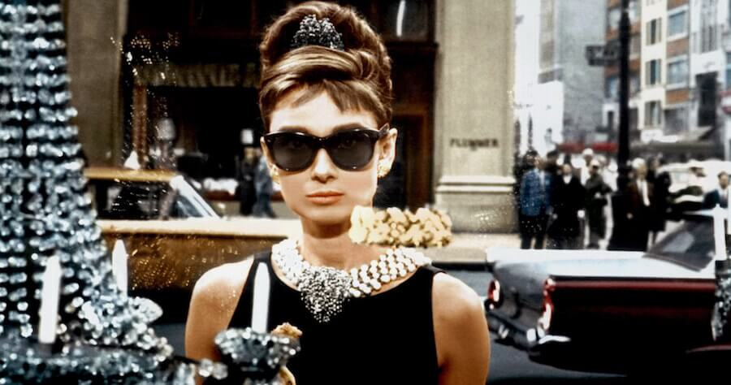

Audrey Hepburn in movie Breakfast at Tiffany's.
Top Movies
1953 - Roman Holiday
1954 - Sabrina
1957 - Funny Face
1959 - The Nun's Story
1961 - Breakfast at Tiffany's
1961 - The Children's Hour
1963 - Charade
1964 - Paris - When It Sizzles
1964 - My Fair Lady
1966 - How to Steal a Million
UNICEF Special Ambassador
1988 - First field mission for UNICEF in Ethiopia. She visited an orphanage in Mek'ele that housed 500 starving children and had UNICEF send food. In August 1988 Audrey went to Turkey on an immunisation campaign. In October,
Audrey went to South America.
1989 - Audrey toured Central America in February 1989, and met with leaders in Honduras, El Salvador, and Guatemala. In April, she visited Sudan with Wolders as part of a mission called "Operation Lifeline". Because of
civil war, food from aid agencies had been cut off. The mission was to ferry food to southern Sudan.
1992 - In October 1990 Audrey went to Vietnam, in an effort to collaborate with the government for national UNICEF-supported immunisation and clean water programmes. In September 1992, four months before she died, Audrey
went to Somalia.
"There is no doubt that the princess did become a queen not only on the screen. One of the most loved, one of the most skillful, one of the most intelligent, one of the most sensitive, charming actresses and friends, in my life but also in the later
stages of her life, the UNICEF ambassador to the children of the world. The generosity, sensitivity, the nobility of her service to the children of the world and the mothers of the world will never be forgotten." --- Gregory Peck